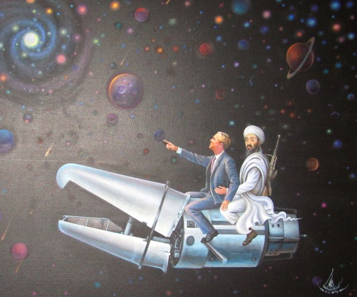

Chang Rai Mountain Adventures
Mongolian Horseback Riding
Mongolian horses can be taken up and down the mountainside with a guide to share the local farming practices as well as sample medicinal plants on the trail.
Bamboo Rafting
Traditional rafts made entirely of bamboo can be taken down the river.
Wat Rong Khun
The White temple and national landmark, Wat Rong Khun, is a short drive from Chang Rai. This complex is the design of Thai artist Chalermchai Kositpipat and has new structures being built. Kositpipat can be found on the grounds for pictures while building onto this masterpiece.

Wat Rong Khun Art Gallery
Alongside the White temple is an art exhibit of Chalermchai Kositpipat's other works.
